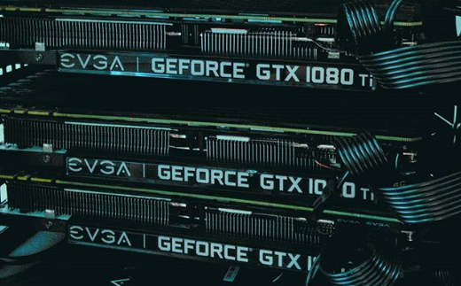

Vídeo Card ou placa de Vídeo.
A placa de vídeo consiste em um componente do computador ou notebook que tem a função de transmitir as imagens para o monitor. São responsáveis por processar os dados do computador e transformá-los em imagem, além disso, as placas de vídeo são conhecidas pelo nome de processadores gráficos, por exercerem essas funções.
Esse componente é indispensável para programas de edição gráfica, assim como para um bom desempenho em edições e reprodução de vídeos, sem contar na performance gráfica no uso de softwares profissionais, que precisam cada vez mais de hardwares sofisticados para apresentar o máximo de desempenho. Há uma grande variedade de placas com recursos distintos.
As primeiras placas de vídeo começaram a ser fabricadas em 1981 pela empresa IBM e pela S3 Graphics, logo, outras empresas do ramo da tecnologia foram surgindo no mercado. No ano de 1995 surgiu no mercado a primeira placa de vídeo com acelerador gráfico 3D, desenvolvida pela empresa ViRGE. Em seguida a famosa Nvidia lançou a NV1.
Hoje em dia é possível encontrar placas para todos os tipos de necessidades, como para tarefas do dia a dia quanto para rodar programas mais pesados. O padrão de placa mais usado é o SVGA (Super Video Graphics Array), que é capaz de suportar diversos modos de resolução do monitor, incluindo resoluções mais altas como as 4K, que aumentam o desempenho em jogos. Também, existe o padrão VGA (Video Graphics Array), que é utilizada em resoluções menores. O GPU consiste em um processador próprio da placa de vídeo, sendo um computador à parte. A memória é responsável por todo processamento gráfico. Isso quer dizer que ela determina a qualidade da imagem a ser reproduzida na tela. De maneira geral, quanto mais eficiente for, mais frames vão ser reproduzidos por segundos – FPS, logo os gráficos poderão ser exibidos em maiores resoluções.
Em geral, diferentes marcas prometem gráficos sofisticados e performance eficiente com seus produtos. Na prática, nem sempre é assim que acontece. Algumas marcas têm se destacado no mercado devido ao fato de que os seus produtos estão entre os mais vendidos. Atualmente a Nvidia e AMD dominam o mercado de placas de vídeo por produzirem boas opções para fins de diversão e trabalho. Escolher uma marca em vez de outra não influencia diretamente na capacidade de execução gráfica, se forem iguais. No entanto, cada placa, oferece características próprias.
Ter uma placa de vídeo é essencial para todos usuários. Alguns demandam uma placa mais dedicada, com grande capacidade de processamento, enquanto outros casos uma placa gráfica simples pode ser o suficiente para uma boa experiência. O importante é ter um componente adequado às necessidades de cada usuário.
